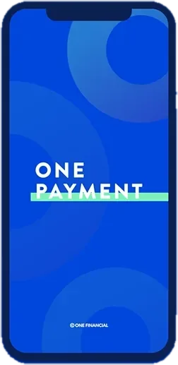
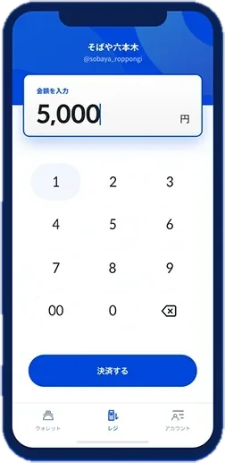
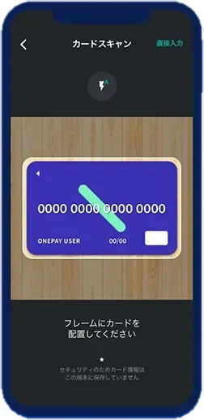
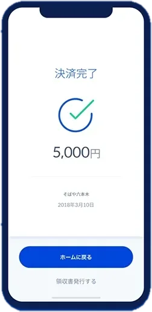
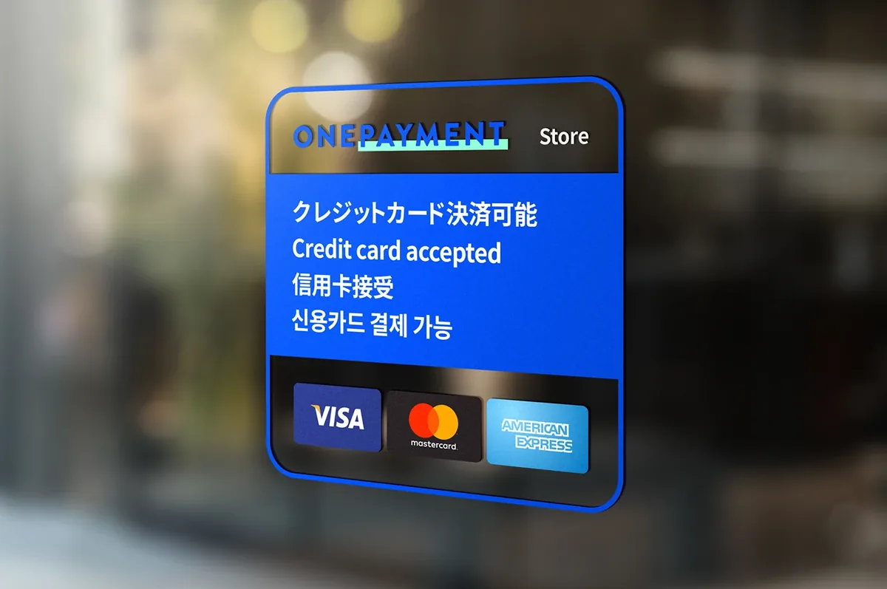

- 01問題定義Problem문제정의
小さなお店や個人がカード決済を始めるには、専用のカードリーダーを用意する必要がありました。リーダーの費用に加え、複雑な審査と高い手数料が、「まず売ってみたい」人の入口をふさいでいました。
For small shops and individuals, accepting cards meant buying a dedicated card reader. The reader cost, a complicated approval process and high fees blocked people who just wanted to start selling.
작은 가게나 개인이 카드 결제를 받으려면 전용 카드 리더기가 있어야 했습니다. 리더기 비용에 까다로운 심사, 높은 수수료까지 겹치면서 "일단 한번 팔아보고 싶은" 사람들에게 카드 결제는 문턱이 너무 높았습니다.
- 02リサーチResearch리서치
- Squareなど先行するスマホ決済は、磁気ストライプを読むためのリーダーが前提だった。
- 対象は、現金決済しかできない小規模事業者と個人。カード決済は導入までの審査が複雑で手数料も高く、導入をためらっていた。
- お客さん側は、その店でカードが使えるかを店頭で判断している。
- Existing mobile payment services such as Square depended on a reader for the magnetic stripe.
- The target was small businesses and individuals that only took cash. Card payments meant a complicated approval process and high fees, so they held back.
- Customers decide at the storefront whether a shop takes cards.
- Square 같은 기존 스마트폰 결제 서비스는 카드 마그네틱을 읽는 리더기가 있어야만 쓸 수 있었다.
- 주요 대상은 현금 결제만 받던 소상공인과 개인 판매자. 카드 결제는 도입 심사가 복잡하고 수수료도 높아서 선뜻 들이지 못하고 있었다.
- 손님은 가게 앞에서 이미 카드를 쓸 수 있는지 없는지를 보고 판단한다.
- 03制約Constraints제약조건
- 創業者・エンジニア・デザイナーの3人チーム。デザインは自分ひとり。
- カード情報を扱うため、使う側にも払う側にも「安心」が伝わる必要がある。
- ITに慣れていない店主でも、その場ですぐ使えること。
- A three-person team: founder, engineer and me as the only designer.
- It handled card data, so both the merchant and the paying customer had to feel safe.
- Shop owners who aren’t comfortable with tech had to be able to use it on the spot.
- 창업자, 엔지니어, 디자이너 세 명뿐인 팀. 디자인은 혼자 맡았다.
- 카드 정보를 다루는 만큼, 결제를 받는 사람과 내는 사람 모두 안심할 수 있어야 했다.
- IT에 익숙하지 않은 가게 주인도 그 자리에서 바로 쓸 수 있어야 했다.
- 04決定Decision결정
iPhoneのカメラでカードを撮影し、OCRで読み取る
Read the card with the iPhone camera and OCR
iPhone 카메라로 카드를 찍으면 OCR로 읽어 들이게 한다
リーダーこそが入口をふさいでいた原因でした。手元のスマホだけで完結させることが、最大の差別化であり、最大のハードルの解消でした。
The reader was the very thing blocking the entrance. Finishing everything on the phone in hand was both the key differentiator and the removal of the biggest hurdle.
문턱을 만든 주범이 바로 리더기였습니다. 손에 든 스마트폰 하나로 끝나게 만드는 것이 가장 큰 차별점이자, 가장 높은 장벽을 허무는 방법이었습니다.
ロゴは「リング」一つに絞る
Reduce the logo to a single ring
로고는 "링" 하나로 단순하게
リングは無限の拡張と機会の象徴です。ロゴの単純さを、そのままサービスの単純さへのこだわりにつなげました。
The ring stands for endless expansion and opportunity. The simplicity of the logo carried straight into the simplicity of the service.
링에는 끝없이 넓어지는 가능성과 기회라는 의미를 담았습니다. 로고의 단순함이 그대로 서비스의 단순함으로 이어지도록 했습니다.
加盟店向けのステッカーキットを作る
Make a sticker starter kit for merchants
가맹점용 스티커 키트를 만든다
対面決済では、お客さんが店頭で「カードが使える」と分からなければ使われません。学園祭の模擬店のような小さな売り手でも、貼るだけで始められるようにしました。
In person, nobody pays by card unless they can see at the storefront that cards are accepted. Even a school festival stall could start just by putting up a sticker.
대면 결제는 손님이 가게 앞에서 "여기 카드 되네"라고 알아봐야 비로소 쓰입니다. 학교 축제 부스 같은 작은 판매자도 스티커만 붙이면 바로 시작할 수 있게 했습니다.
- 05改善Iteration개선
Incubate FundからプレシリーズAで1億円を調達。THE BRIDGE、GIZMODO、PR TIMESなどで紹介されました。
Raised ¥100M in a pre-Series A from Incubate Fund. Covered by THE BRIDGE, GIZMODO and PR TIMES.
Incubate Fund에서 프리시리즈 A로 1억 엔을 투자받았고, THE BRIDGE, GIZMODO, PR TIMES 등에 소개되었습니다.
その後「1分でできる商品ページ作成機能」を追加し、対面だけでなくオンラインでの決済にも広げました。
Later added a one-minute product page builder, extending payments from in person to online.
이후 "1분이면 만드는 상품 페이지" 기능을 더해, 대면 결제를 넘어 온라인 결제까지 쓸 수 있게 넓혔습니다.